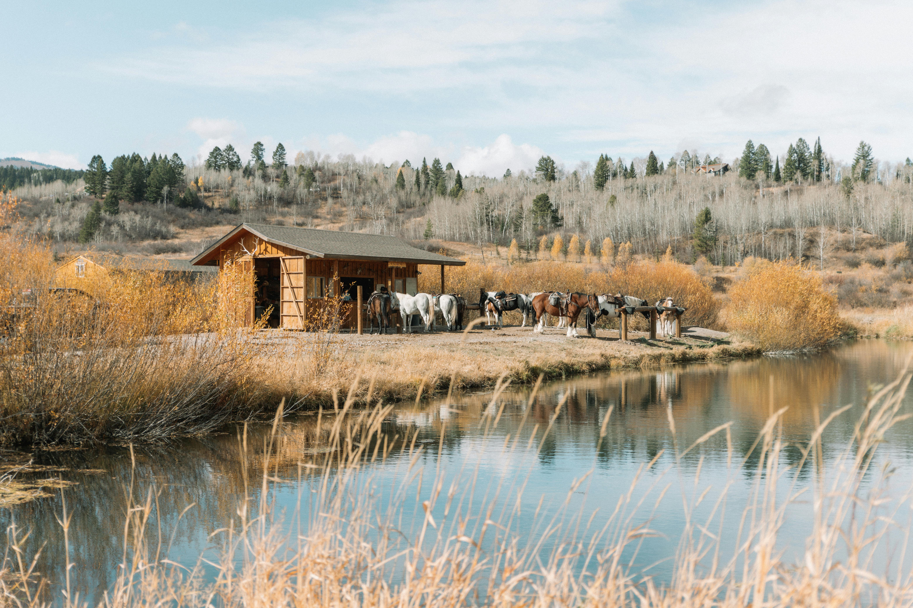
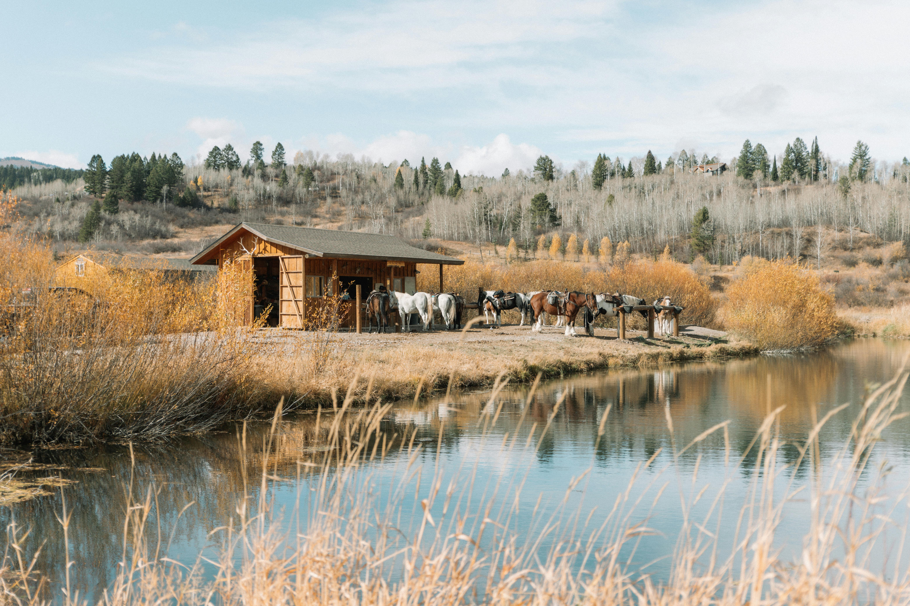

¿Quienes somos?
En ASPROS, somos mucho más que un simple refugio de perros. Somos una comunidad apasionada y comprometida de amantes de los animales, dedicados a proporcionar amor, cuidado y refugio a los perros necesitados. Nuestra organización fue fundada con el firme propósito de ser una voz para aquellos que no pueden hablar por sí mismos, y desde entonces nos hemos esforzado por ser un faro de esperanza para los peludos sin hogar. Nos enorgullece ser una familia de voluntarios, veterinarios y colaboradores que comparten una visión común: crear un mundo donde cada perro sea valorado, amado y respetado. En ASPROS, creemos en la importancia de la compasión, la empatía y la acción, y nos esforzamos por ser un modelo a seguir en la comunidad en lo que respecta al cuidado y protección de los animales. Nos distinguimos por nuestro compromiso inquebrantable con el bienestar de nuestros residentes peludos. Cada día, trabajamos incansablemente para brindarles a los perros bajo nuestro cuidado la atención médica adecuada, alimentación nutritiva y, lo más importante, toneladas de amor y afecto. Además de proporcionar un refugio seguro y reconfortante, nos dedicamos a educar a la comunidad sobre la importancia de la adopción responsable y el trato ético hacia los animales. En ASPROS, no solo rescatamos perros, sino que también construimos relaciones significativas entre humanos y animales que perdurarán mucho más allá de la adopción. Juntos, estamos cambiando vidas, una pata a la vez, y estamos comprometidos a seguir haciéndolo mientras haya perros que necesiten nuestra ayuda y amor.
Nuestra Misión
En ASPROS, nuestra misión es simple pero poderosa: proporcionar cuidado, compasión y compromiso a cada perro que entra por nuestras puertas. Nos dedicamos a brindar un hogar temporal seguro y afectuoso para perros que han sido abandonados, maltratados o que se encuentran en situación de calle. Trabajamos incansablemente para encontrarles hogares permanentes llenos de amor y atención, creyendo firmemente en darles a estos maravillosos animales una segunda oportunidad en la vida.


 
